GASTRONOMIA MÚSICA BONS ENCONTROS
Boa comida.
Muitas memórias
Uma casa para chegar sem pressa, reunir os amigos e transformar qualquer encontro em história boa.
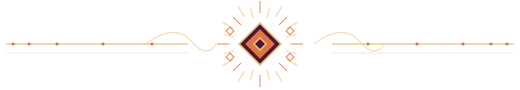
O MELHOR É FICAR MAIS UM POUCO.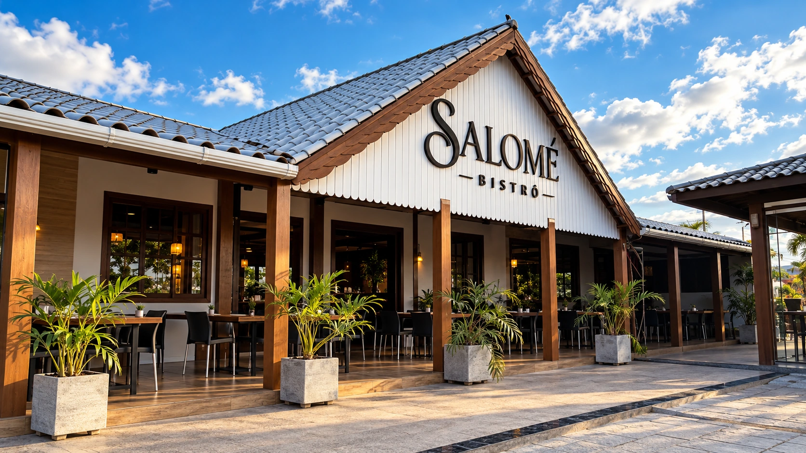
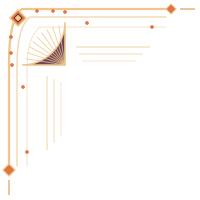
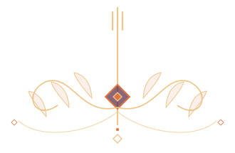
Não é só
sobre comer.
É sobre viver.
O Salomé nasceu em Gravatá para ser ponto de encontro. Uma casa onde a cozinha tem personalidade, a música aproxima e o tempo encontra espaço para passar devagar.
Fundado em 15 de abril de 2022, o bistrô leva uma homenagem de família no nome e muito afeto na maneira de receber.
Conheça nossa casa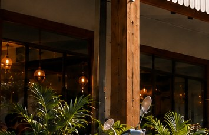
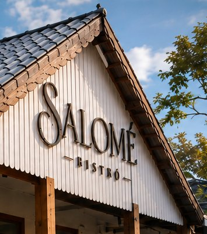
DA COZINHA PARA A MESA
Tempero de casa.
Vontade de repetir.
Porções para dividir, pratos para lembrar e drinks para brindar. Aqui, a comida não fica em segundo plano.
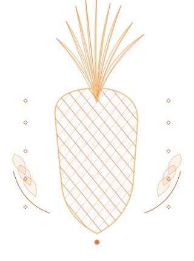
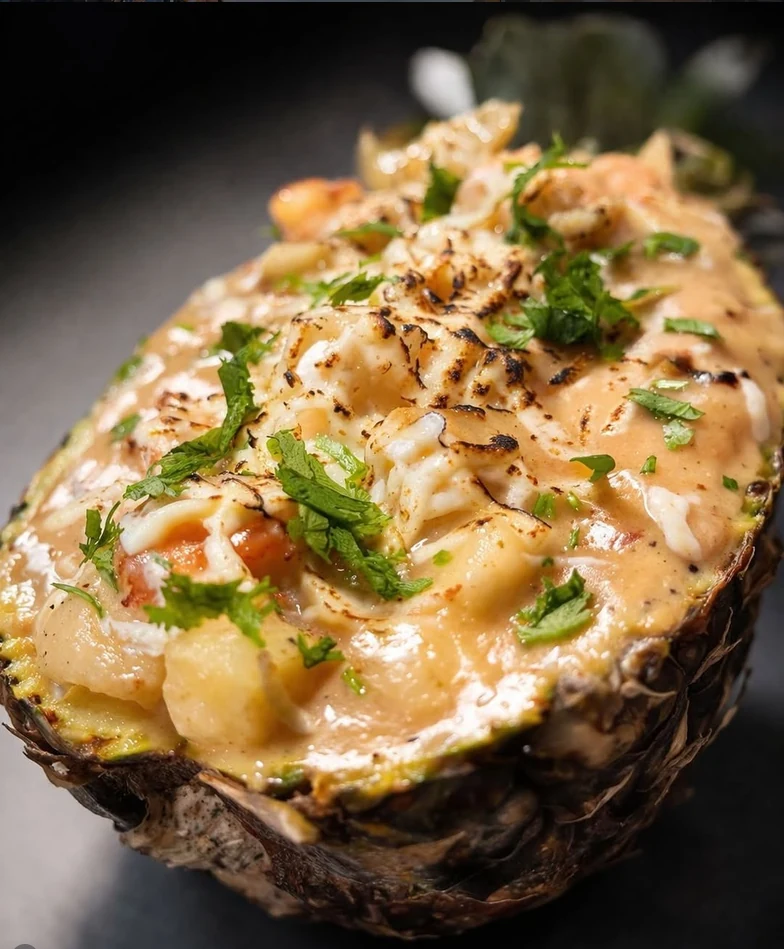
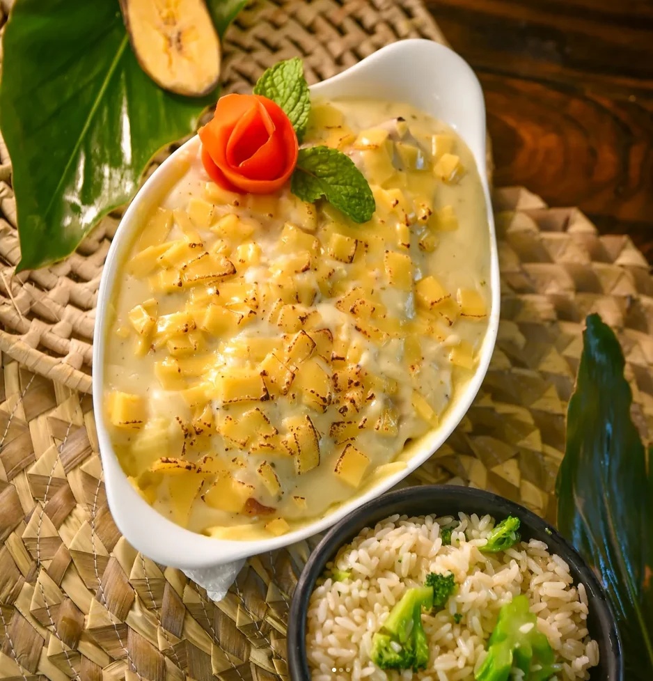
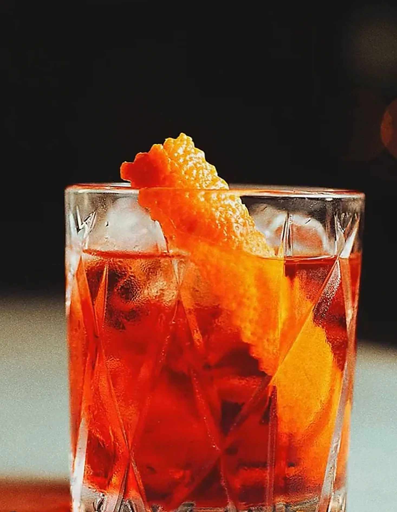
A CASA TAMBÉM TEM TRILHA SONORA
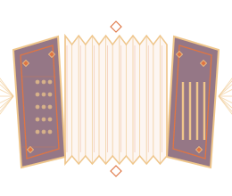
A noite
não para
no prato.
Música ao vivo, bons encontros e aquela vontade de pedir só mais uma rodada. O Salomé também é feito de noites que a gente conta no dia seguinte.
Veja a programação no Instagram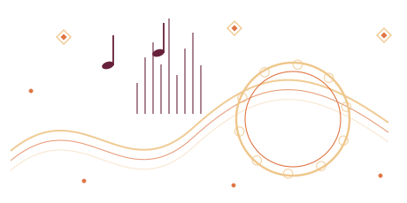
MÚSICA
AO VIVO
BOA MÚSICA
BONS ENCONTROS
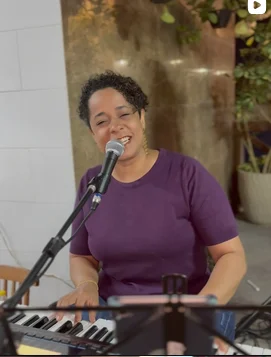
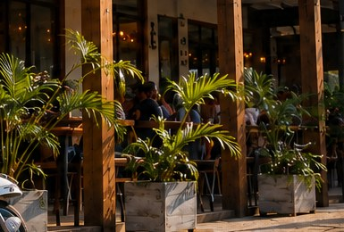
CHEGUEMAIS
TODA HISTÓRIA TEM UMA MESA
Com amigos.
Com família.
Com quem importa.
O melhor encontro é aquele em que todo mundo se sente em casa. Gastronomia, conversa e espaço para viver bons momentos, do primeiro prato ao último brinde.
Para informações atualizadas sobre programação, espaço infantil e comodidades, consulte nossos canais oficiais.
Acompanhar novidadesALGUNS MOMENTOS MERECEM FICAR
Pra guardar
na memória.
Da mesa ao palco, da entrada à última conversa: um pouco da nossa casa em imagens.
SUA PRÓXIMA HISTÓRIA COMEÇA AQUI
A casa está
de portas abertas.
Estamos em Gravatá, PE. Venha descobrir o que acontece quando boa comida, música e bons encontros dividem a mesma mesa.
Como chegar ↗Instagram oficial ↗